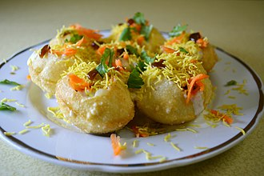

Chat Street Food

Chaat
is the most fascinating culinary concoctions prepared in the street corners or gallis of every city/town of our country.
Isn’t the smell of street food enticing? Isn’t it exciting to watch the street food vendor swiftly assemble a plate of Chaat with all its colorful assortment of spices and chutneys?
Just one mouthful is enough to relish the contrasting flavors with gusto. Its probably the best snack one has devoured, leaving with an after taste that is hard to forget.
A Chaat special that has curried peas aka ragda as a topping over crushed puris, a smothering of meeta chutney and green chutney and finished off with
sev
. A popular quick eat that is lip smacking delicious!